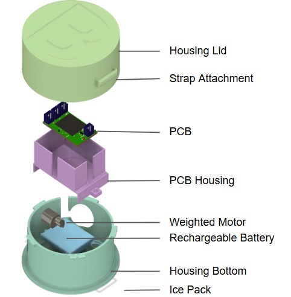
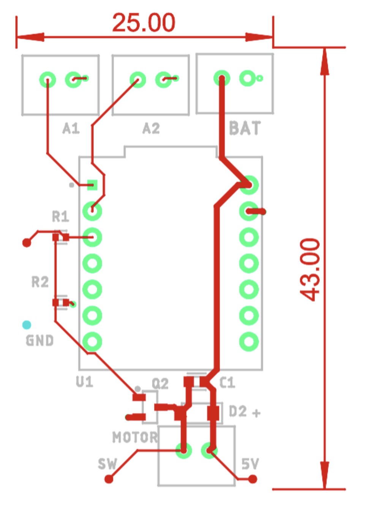

A low-cost, open-source device for children undergoing repeated injections
This project was my final design project to complete my engineering degree. Our objective was to create a low-cost, open-source device to relieve procedural pain during pediatric injections. Children with Juvenile Idiopathic Arthritis (JIA) often require approximately 42 injections per year, a process that frequently causes significant emotional distress. While commercial pain-modulating devices exist, they are often too expensive for widespread use in rural or low-resource clinics.
My team and I aimed to solve this by designing a 3D-printable device that uses both vibration and cooling therapy to reduce pain perception. The design needed to be child-friendly, easy to assemble without engineering support, and backed by clinical evidence on what actually works for pain modulation.
Design specifications derived from stakeholders and literature
The device is based on the gate control theory of pain, which describes how non-painful stimuli like vibration and cooling can reduce the perception of pain by activating competing sensory pathways. I conducted stakeholder interviews with clinicians and reviewed the literature to determine what specifications would give the best pain modulation results. This process set our key targets: a vibration frequency range of 100–200 Hz and a cooling surface temperature between 4–10°C sustained over a 10-minute procedure window.
A screwless, modular 3D-printed housing
The mechanical design was my primary responsibility on this project. Our design features a child-friendly, 3D-printable PLA housing with swappable modules to give the device the broadest possible utility. The vibration module and the cooling module can each be attached or removed independently, so clinicians can use the device with one or both modalities depending on patient preference and the clinical situation.
I designed the housing to be fully screwless in OnShape, using printed snap and press-fit features instead of fasteners so a non-technical caregiver could assemble it in under 13 minutes with no tools. Cooling is achieved through integrated holders for swappable gel ice packs — the geometry of the holder went through several print iterations to balance thermal contact, structural rigidity, and comfort for a pediatric patient.
All parts are printable on a standard FDM printer using PLA. I also compiled a Design History File (DHF) — design requirements, test protocols, and drawings — alongside assembly instructions and clinical operation protocols, so the device can be adopted and reproduced by any clinic without engineering support.
If you want to learn how to make your own pediatric pain device, check out our open-source documentation!

Custom PCB motor driver and embedded control
The vibration component consists of an electrical module featuring a weighted motor, a custom PCB motor driver, and a microcontroller that allows for changes in vibration speed. I designed the PCB and circuit schematic to drive the motor at the target frequencies, with the microcontroller outputting a PWM signal to control motor speed.
The circuit uses a transistor to switch the motor, with a flyback diode to protect against the back-EMF the motor generates when switching. I also included bypass capacitors to reduce electrical noise on the power lines. The board was designed to be compact and battery-powered so it can be used cordlessly during procedures.
One challenge with ERM motors is that the output frequency is not perfectly linear with the PWM duty cycle — it varies depending on the motor load and battery voltage. To ensure the device reliably hits the target frequency range, I characterized the motor response at different drive levels and used verification testing with an accelerometer to confirm the final output. I am currently improving the motor driver circuitry to allow operation at several discrete frequencies and amplitudes rather than a single variable speed.

Testing against clinical design specifications
I conducted verification testing to confirm the device met the critical pain-modulation requirements. Testing results confirmed the device performs within spec on both modalities:
Vibration frequency was measured using an accelerometer mounted to the device surface, and cooling performance was logged using a thermocouple over a 10-minute test window. Both results fell within the target ranges derived from the literature and stakeholder interviews, confirming the design meets its clinical requirements.